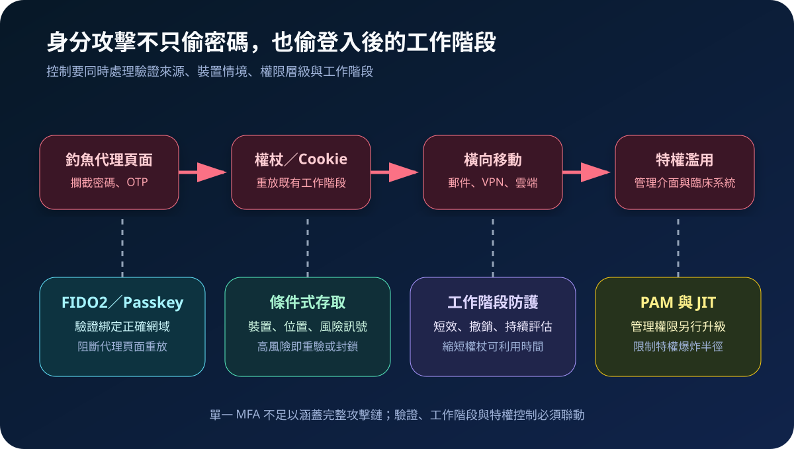
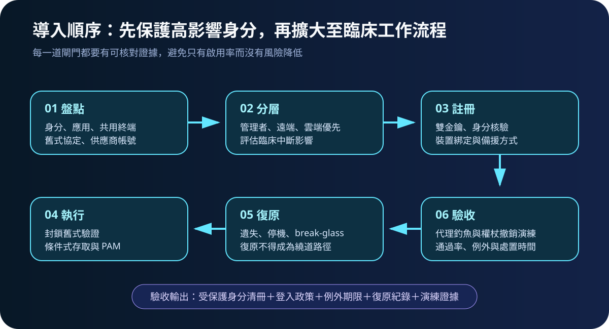
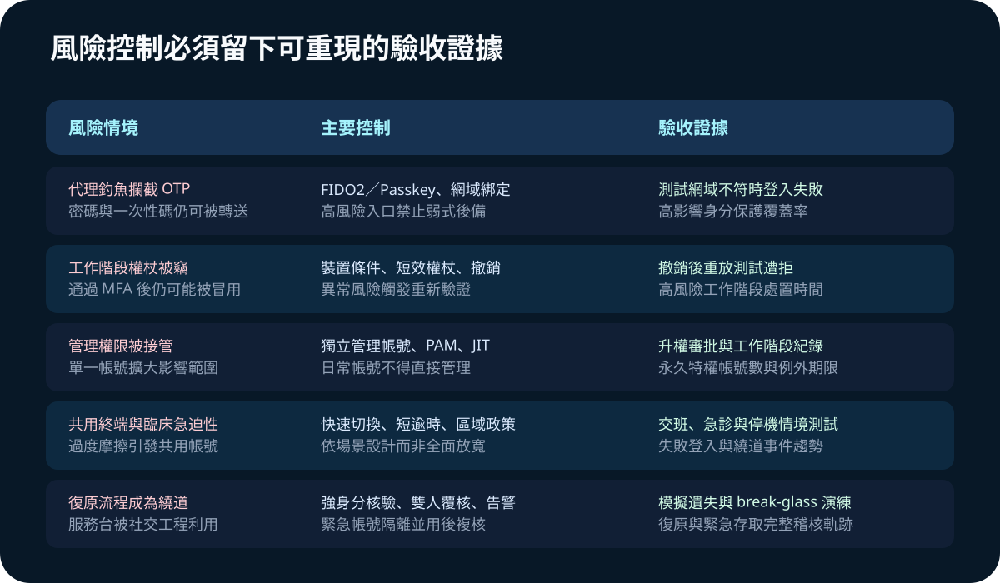

醫療資安國際觀察 · 2026-08-24
醫療登入不只要多一道驗證：抗釣魚 MFA 與工作階段防護
作者：Dr. William｜醫療資訊與資安治理實務工作者
醫院啟用簡訊或一次性密碼 MFA 後，攻擊者仍可能以即時代理頁面轉送驗證，或直接竊取已登入的 Cookie。有效治理不只增加驗證步驟，還要驗證正確網站、限制登入情境、縮短工作階段風險，並把管理權限另行隔離。
名詞解釋：抗釣魚不等於所有 MFA
FIDO2 是以公開金鑰進行驗證的技術架構；passkey 是可由裝置或受控服務保存的 FIDO 憑證。驗證與網站網域綁定，因此假網站無法取得可在真網站重放的秘密。token theft 是竊取登入後的權杖或 Cookie，可能繞過先前完成的 MFA。conditional access 依身分、裝置、位置及風險訊號決定放行、重驗或阻擋；PAM 則管理高權限帳號的申請、限時升權與紀錄。
國際現況與適用邊界
NIST SP 800-63B-4 於 2025 年 8 月正式發布，將網路釣魚抵抗力定義為驗證通訊輸出與特定通道或網域建立密碼學綁定，並指出密碼、OTP 與帶外驗證本身不具抗釣魚能力；AAL2 的驗證者須提供至少一種抗釣魚選項。CISA 的實作資料將 FIDO／WebAuthn 視為廣泛可用的抗釣魚方法，並說明在無法立即導入時，可先採 number matching 等過渡控制。ENISA 2026 醫療採購指引則把強式驗證、特權帳號及遠端存取要求放入醫療產品與服務的採購生命週期。
法域界線：NIST 對美國聯邦系統的規範文字與 CISA、ENISA 指引，不是台灣醫院的直接法定義務。其技術模型可轉為台灣醫療機構的風險分級與驗收條件；實際適用仍應依台灣法規、主管機關公告、院內政策、契約及臨床可用性確認。
規劃：先找出身分失陷的臨床後果
範圍至少涵蓋管理者、遠端維運、郵件、VPN、雲端控制台、醫療資訊系統及帳號復原流程。規劃時需記錄身分類型、驗證方式、裝置條件、舊式協定、工作階段期限、升權路徑與 break-glass 使用者。優先保護可變更臨床資料、建立帳號、停用防護或大規模匯出的身分。驗收指標可包含高影響身分抗釣魚覆蓋率、舊式驗證封鎖率、永久特權帳號數、高風險工作階段處置時間，以及具到期日的例外數量。

實作：驗證、工作階段與特權同步收斂
- 建立清冊：連結人員、供應商、服務帳號、應用、驗證協定及臨床重要性，找出不支援現代驗證的入口。
- 保護高風險身分：為管理者與遠端帳號註冊至少兩個受控 FIDO2 驗證器，完成身分核驗，停用可被轉送的弱式後備。
- 執行條件政策：要求受管裝置或可信情境，封鎖舊式協定，異常位置、裝置或權杖風險觸發重驗與撤銷。
- 隔離特權：日常帳號與管理帳號分離，透過 PAM／JIT 限時升權；供應商維護採具名帳號並留存活動紀錄。
- 設計可用復原：遺失金鑰、網路中斷及臨床緊急狀況需有雙人覆核、限時 break-glass、即時告警與用後複核。
- 攻防驗收：測試代理釣魚、被竊權杖重放、異常登入、撤銷與服務台社交工程，不以「已開啟 MFA」作為完成證據。
風險：安全摩擦可能製造新的繞道
共用護理站、戴手套操作、快速交班及設備相容性，可能使全面套用單一政策造成共用帳號或長時間不鎖定。控制應依場景設計快速切換及適當逾時，不可直接全面放寬。其他失敗模式包括僅保護一般使用者卻忽略服務台復原、保留永久管理權限、將簡訊當成最終狀態，以及未撤銷已失陷的工作階段。

可執行清單
- 管理者、遠端維運、郵件與雲端入口是否優先採用 FIDO2／passkey？
- 是否封鎖舊式驗證，且弱式後備不會繞過高風險身分政策？
- 裝置與風險訊號能否觸發重驗、封鎖及工作階段撤銷？
- 日常帳號是否與管理帳號分離，特權是否採 PAM／JIT 並可追查？
- 遺失驗證器、急診、交班、停機與 break-glass 是否完成實際演練？
來源
- NIST SP 800-63B-4｜Digital Identity Guidelines: Authentication and Authenticator Management（發布：2025-08-01；查閱：2026-08-24）
- CISA｜Implementing Phishing-Resistant MFA（發布：2022-10；查閱：2026-08-24）
- ENISA｜Procurement guidelines for the cybersecurity of hospitals and healthcare providers（發布：2026-07-22；查閱：2026-08-24）
內容說明
本文依健康台灣深耕計畫相關治理內容整理，並參考美國與歐盟官方身分及醫療採購資料，提出台灣醫療機構可採用的規劃與驗收框架；不取代主管機關正式公告、法律意見、個別契約或院內臨床風險評估。